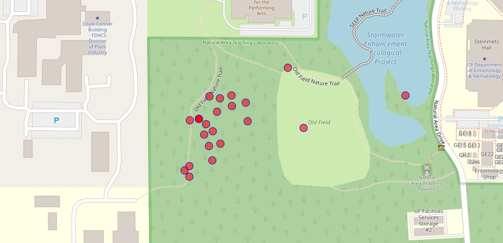

EVS 3000L JS in GIS Tutorial

This document was developed for the School of Natural Resources and Environment at the University of Florida.
1 Introduction
This tutorial provides a simple introduction to Geographic Information Systems (GIS) and basic programming concepts in a way that connects directly to natural resources and environmental analysis. The goal is to offer a foundational understanding that makes GIS and coding more approachable and useful if students encounter these topics in future coursework or careers.
Rather than focusing solely on proprietary software, this tutorial introduces students to open-source tools and workflows that support spatial analysis and data visualization. By using GitHub for version control and collaboration, and integrating open-source GIS software alongside ArcGIS Online, students will gain experience with practical, widely used geospatial methods.
For this exercise, we will work with data collected from the Natural Area Teaching Lab (NATL). The data will be hosted on ArcGIS Online and we will use GitHub as a repository to develop and explore GIS functions, interactive web mapping, and reproducible workflows.
1.1 Why Open-Source?
- Accessibility: Open-source GIS tools like QGIS, Leaflet, and GeoPandas provide free alternatives to proprietary software, lowering financial barriers.
- Collaboration: Using GitHub fosters version control, teamwork, and transparent sharing of spatial data and code.
- Reproducibility: Open-source programming in Python (GeoPandas, Folium) or JavaScript (Leaflet) allows users to automate spatial analyses and create dynamic web maps that can be shared and modified by others.
- Integration: Open-source GIS can work alongside proprietary tools (ArcGIS Online, Esri APIs), providing flexibility in different workflows.
1.2 What You’ll Learn
- Basic GIS concepts – how spatial data is structured and analyzed.
- Introduction to open-source GIS tools – Leaflet libraries
- Hosting and managing geospatial data using ArcGIS Online and GitHub.
- Simple programming for GIS – writing basic scripts in JavaScript to interact with maps and data.
- Web mapping fundamentals – building interactive maps using Leaflet.js.
By the end of this tutorial, students will have a working knowledge of open-source GIS and programming methods that they can build upon for research, environmental management, and natural resource applications.
1.3 Before You Begin
To complete this tutorial, you will need:
- A GitHub account to manage your code. GitHub
- An ArcGIS Online account to access GIS data services. ArcGIS Online
(GitHub is free, but ArcGIS Online requires affiliation with an institution (e.g., a university) or a paid subscription. If you are a student, check with your school for access.)
For an overview of all GIS functions used in this tutorial, see the References section at the bottom.
For additional information on Leaflet, an open-source JavaScript library for mobile-friendly interactive maps, visit the Leaflet Documentation.
2 Step 1: Basic HTML Structure
Every webpage starts with a simple HTML structure.
- The
<!DOCTYPE html>declaration, which tells the browser we are using HTML5. - The
<html>element, which wraps everything inside the document. - The
<head>section, where we define the title of the page. - The
<body>section, which contains the visible content.
<!DOCTYPE html>
<html>
<head>
<title>EVS 3000L</title>
</head>
<body>
<p>Hello, EVS!</p>
</body>
</html>3 Step 2: Adding JavaScript Libraries
In this step, we install Leaflet, a JavaScript library designed for interactive mapping.
3.1 What is a Library?
- A library is a collection of pre-written code that provides useful functions.
- It saves time and effort by allowing us to perform tasks without writing every function from scratch.
- In GIS, mapping libraries help:
- Manage spatial data
- Render maps
- Create interactive features
- Manage spatial data
3.2 Why Use Leaflet?
- Lightweight, efficient, and easy to use.
- Provides built-in tools for displaying maps, adding layers, and handling user interactions.
- Allows us to quickly set up an interactive map with minimal code.
3.3 Loading Leaflet from a CDN
The code below loads Leaflet from a Content Delivery Network (CDN), making it available for use in our project.
<link rel="stylesheet" href="https://unpkg.com/leaflet/dist/leaflet.css" /><script src="https://unpkg.com/leaflet/dist/leaflet.js"></script>
<!DOCTYPE html>
<html>
<head>
<title>EVS 3000L</title>
<!-- Load Leaflet from CDN -->
<link rel="stylesheet" href="https://unpkg.com/leaflet/dist/leaflet.css" />
<script src="https://unpkg.com/leaflet/dist/leaflet.js"></script>
</head>
<body>
<p>Leaflet is now ready!</p>
</body>
</html>After adding this, Leaflet is installed and ready to use, allowing us to create and customize interactive maps in the next steps.
Learn more about Leaflet: Leaflet Official Documentation
4 Step 3: Adding CSS Styles
In this step, we define styles using CSS (Cascading Style Sheets). The CSS controls the appearance and layout of web elements, allowing customization of colors, fonts, spacing, and responsiveness. The # symbol targets a specific element by its unique ID, ensuring only that element receives the defined styles, while other selectors like . (class) apply styles to multiple elements.
4.1 What Does CSS Do?
- Allows us to set colors, fonts, spacing, and layout.
- Makes content visually structured and easy to interact with.
4.2 How It Applies to Leaflet:
- Ensures the map displays correctly by setting its size.
- The
#mapidcontainer is given a height of 100% of the viewport height (100vh); width is set to 100%.
- The width is set to 100%, making the map responsive.
4.3 Understanding (div) Elements:
- The
<div>element is a container that groups and organizes content. - The
id="mapid"attribute gives the<div>a unique identifier, allowing us to target it with CSS and JavaScript. - Without this container
<div>, the map would not have a place to display on the webpage.
<!DOCTYPE html>
<html>
<head>
<title>EVS 3000L</title>
<link rel="stylesheet" href="https://unpkg.com/leaflet/dist/leaflet.css" />
<script src="https://unpkg.com/leaflet/dist/leaflet.js"></script>
<style>
#mapid {
height: 100vh;
width: 100%;
}
</style>
</head>
<body>
<div id="mapid"></div>
</body>
</html>W3Schools offers a CSS testing tool where you can experiment with CSS code on the fly, and it also provides similar tools for HTML, JavaScript, and other web technologies.]
5 Step 4: Initialize Leaflet Map
Now that Leaflet is installed and styled, we need to initialize the map so it appears on the webpage.
This step creates a map instance, which is the core object that manages how the map is displayed and interacts with data.
5.1 What Happens in This Step?
- Creates a map instance →
L.map('mapid')connects Leaflet to the<div>where the map will be displayed.
- Sets the center of the map → The coordinates
[29.7993, -82.7728]define the starting point (latitude, longitude).
- Defines the zoom level →
8.8sets how far the map is zoomed in (higher numbers zoom in closer).
<html>
<head>
<title>EVS 3000L</title>
<link rel="stylesheet" href="https://unpkg.com/leaflet/dist/leaflet.css" />
<script src="https://unpkg.com/leaflet/dist/leaflet.js"></script>
<style>
#mapid {
height: 100vh;
width: 100%;
}
</style>
</head>
<body>
<div id="mapid"></div>
<script>
var mymap = L.map('mapid').setView([29.7993, -82.7728], 8.8);
</script>
</body>
</html>6 Step 5: Add Base Layers
Now that we have initialized the map, we need to add base layers, which serve as the background and provide geographic context for our data. A base layer displays features like roads, terrain, or satellite imagery, helping users interpret spatial information.
In this step, we will add two different base layers and include a control panel that lets users switch between them.
6.1 What Happens in This Step?
- Loads base layers (Maps) using
L.tileLayer()→ This function retrieves different map backgrounds, such as street maps, satellite imagery, and terrain views, from external sources. - Uses
addLayersControl()→ A function that enables users to toggle between base layers using a built-in Leaflet control button.
Learn more about Leaflet OpenStreet Baselayers:
<!DOCTYPE html>
<html>
<head>
<title>Leaflet Base Layers</title>
<link rel="stylesheet" href="https://unpkg.com/leaflet/dist/leaflet.css" />
<script src="https://unpkg.com/leaflet/dist/leaflet.js"></script>
<style>
#mapid {
height: 100vh;
width: 100%;
}
</style>
</head>
<body>
<div id="mapid"></div>
<script>
var mymap = L.map('mapid').setView([29.6339, -82.3699], 16.8);
var earth = L.tileLayer('https://{s}.tile.openstreetmap.org/{z}/{x}/{y}.png', {
maxZoom: 19,
attribution: 'Map data © OpenStreetMap'
}).addTo(mymap);
var satellite = L.tileLayer('https://server.arcgisonline.com/ArcGIS/rest/services/World_Imagery/MapServer/tile/{z}/{y}/{x}', {
attribution: 'Tiles © Esri, Earthstar Geographics',
maxZoom: 19
});
L.control.layers({
"Earth": earth,
"Satellite": satellite
}).addTo(mymap);
</script>
</body>
</html>7 Step 6: Add Feature Layers
Now that we have set up the base layers, it’s time to add feature layers, which are data layers that contain specific geographic features such as boundaries, points, or polygons. In this step, we will load the NATL Data from an ArcGIS Online feature service and display them on our map.
7.1 What Happens in This Step?
- Loads Esri Leaflet → A plugin that allows us to use ArcGIS feature layers in Leaflet. (We need to another library similar to what we did in Step 2)
- Erri Leaflet Library:
<script src="https://unpkg.com/esri-leaflet"></script>
- Erri Leaflet Library:
- Adds a feature layer from ArcGIS Online
'https://services.arcgis.com/LBbVDC0hKPAnLRpO/arcgis/rest/services/tree_measurement_all/FeatureServer/0'
7.2 Why Do We Need Feature Layers?
- Unlike base layers, which provide a background map, feature layers display specific data such as roads, water bodies, protected areas, or administrative boundaries.
- Feature layers allow users to visualize, analyze, and interact with geographic data.
<!DOCTYPE html>
<html>
<head>
<title>EVS 3000L</title>
<!-- Load Leaflet from CDN -->
<link rel="stylesheet" href="https://unpkg.com/leaflet/dist/leaflet.css" />
<script src="https://unpkg.com/leaflet/dist/leaflet.js"></script>
<!-- Load Esri Leaflet -->
<script src="https://unpkg.com/esri-leaflet"></script>
<style>
#mapid {
height: 100vh;
width: 100%;
}
</style>
</head>
<body>
<!-- Map Container -->
<div id="mapid"></div>
<script>
// Initialize Map
var mymap = L.map('mapid').setView([29.6339, -82.3699], 16.8);
// Base Layers
var earth = L.tileLayer('https://{s}.tile.openstreetmap.org/{z}/{x}/{y}.png', {
maxZoom: 19,
attribution: 'Map data © <a href="https://www.openstreetmap.org/">OpenStreetMap</a> contributors'
}).addTo(mymap);
var satellite = L.tileLayer('https://server.arcgisonline.com/ArcGIS/rest/services/World_Imagery/MapServer/tile/{z}/{y}/{x}', {
attribution: 'Tiles © Esri, Earthstar Geographics',
maxZoom: 19
});
// Layer Control
var baseMaps = {
"Earth": earth,
"Satellite": satellite
};
L.control.layers(baseMaps).addTo(mymap);
// Feature Layer from ArcGIS Online
var featureLayer = L.esri.featureLayer({
url: 'https://services.arcgis.com/LBbVDC0hKPAnLRpO/arcgis/rest/services/tree_measurement_all/FeatureServer/0',
}).addTo(mymap);
</script>
</body>
</html>ArcGIS Online: A cloud-based GIS platform for mapping, analysis, and data sharing.
8 Step 7: Add Feature Layer Functions
Now that we’ve completed our map with data, let’s add a feature layer function that allows us to interact with the data. These functions enhance our map by displaying circle markers at each data point while providing important popup information when clicked.
style: function ()- This function defines the visual appearance of the feature layer.
onEachFeature: function (feature, layer)- This function creates a popup tool that allows users to view detailed information when clicking a feature.
8.1 Why This Matters
This step transforms your static map into an interactive ecological data visualization tool. By integrating a feature layer function, you make the map more informative and user-friendly, allowing users to explore data directly on the map rather than relying on a separate table or document.
<!DOCTYPE html>
<html>
<head>
<title>EVS 3000L</title>
<!-- Load Leaflet from CDN -->
<link rel="stylesheet" href="https://unpkg.com/leaflet/dist/leaflet.css" />
<script src="https://unpkg.com/leaflet/dist/leaflet.js"></script>
<!-- Load Esri Leaflet -->
<script src="https://unpkg.com/esri-leaflet"></script>
<style>
#mapid {
height: 100vh;
width: 100%;
}
</style>
</head>
<body>
<!-- Map Container -->
<div id="mapid"></div>
<script>
// Initialize Map
var mymap = L.map('mapid').setView([29.6339, -82.3699], 16.8);
// Base Layers
var earth = L.tileLayer('https://{s}.tile.openstreetmap.org/{z}/{x}/{y}.png', {
maxZoom: 19,
attribution: 'Map data © <a href="https://www.openstreetmap.org/">OpenStreetMap</a> contributors'
}).addTo(mymap);
var satellite = L.tileLayer('https://server.arcgisonline.com/ArcGIS/rest/services/World_Imagery/MapServer/tile/{z}/{y}/{x}', {
attribution: 'Tiles © Esri, Earthstar Geographics',
maxZoom: 19
});
// Layer Control
var baseMaps = {
"Earth": earth,
"Satellite": satellite
};
L.control.layers(baseMaps).addTo(mymap);
// Feature Layer from ArcGIS Online
var featureLayer = L.esri.featureLayer({
url: 'https://services.arcgis.com/LBbVDC0hKPAnLRpO/arcgis/rest/services/tree_measurement_all/FeatureServer/0',
style: function () {
return { color: "blue", weight: 1, fillOpacity: 0.6 };
},
pointToLayer: function (geojson, latlng) {
return L.circleMarker(latlng, {
radius: 8, // Adjust size of circles
fillColor: "red",
color: "white",
weight: 1,
opacity: 1,
fillOpacity: 0.8
});
},
onEachFeature: function (feature, layer) {
// Content for hover/click popup
var popupContent = `
<strong>Species:</strong> ${feature.properties.species || "Unknown"}<br>
<strong>DBH:</strong> ${feature.properties.dbh_inches || "N/A"} inches<br>
<strong>Height:</strong> ${feature.properties.height_stick_feet_inches || "N/A"} feet<br>
<strong>Names:</strong> ${feature.properties.names || "N/A"}<br>
<strong>Location:</strong> ${feature.properties.location || "N/A"}<br>
`;
layer.bindPopup(popupContent);
}
}).addTo(mymap);
</script>
</body>
</html>8.2 Congratulations! 🎉
You have now coded and built your first environmental GIS-based webpage! You’ve learned a new way to work with spatial data while learning basic programming concepts.
9 References
This section provides a quick overview of the main GIS functions used in this tutorial.
9.1 Leaflet Functions
9.2 Esri Leaflet Functions
L.esri.featureLayer()– Loads ArcGIS Online feature layers. Docs